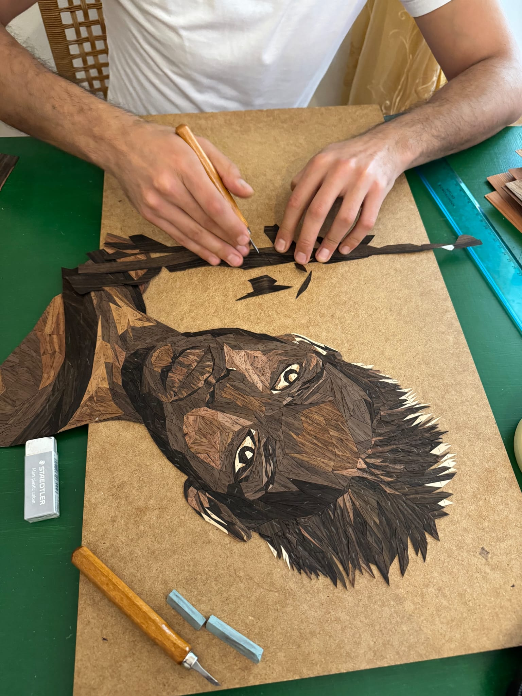

Pourquoi une marqueterie demande des semaines, et non des heures
Chaque œuvre VaCa Marquetry est construite en placage de bois naturel, choisi et découpé à la main, pièce par pièce — sans gabarits laser, sans raccourcis.
Du concept à l’œuvre achevée
Photo & concept
Chaque œuvre commence par une image de référence et un plan de composition.
Choix des bois
Les placages sont choisis pour leur fil, leur ton et leur couleur, selon les besoins de la composition.
Chaque pièce découpée à la main
Chaque pièce est découpée à la main — un seul portrait peut en demander de 400 à plus de 900.
Ajustage & assemblage
Chaque pièce est ajustée à sa place, et l’image se construit pièce par pièce, comme une mosaïque.
Ponçage & finition
La surface est poncée puis protégée par un vernis qui lui assure une longue durabilité.
Encadrement
L’œuvre achevée est encadrée et préparée pour la photographie, la certification et l’expédition.
Glossaire des essences
Noyer
Des tons riches et sombres, pour la profondeur et le contraste.
Chêne
Un fil marqué, souvent utilisé pour la texture et la structure.
Érable
Clair, au grain fin — pour les rehauts et les tons lumineux.
Wengé & acajou
Des tons profonds et chauds, pour les ombres et les contrastes marqués.
Le processus en photographies





Commander une œuvre originale
Chaque commande commence par un échange privé et un aperçu offert de votre portrait, préparé sous 24 heures.
Commencer un portrait sur mesureVous découvrez la marqueterie ? Lisez un bref guide de son histoire et de sa technique.